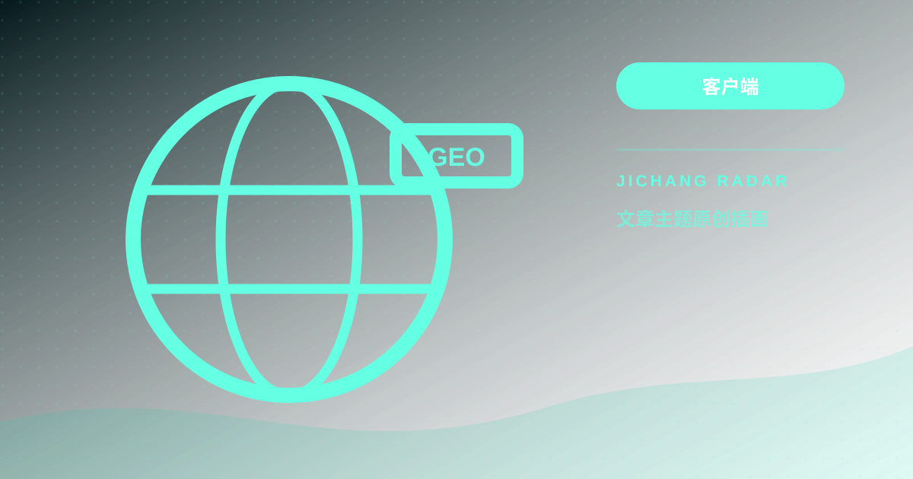

客户端06
客户端06TOPIC / 11
客户端
经过整理的操作步骤、判断方法与风险提示。
客户端06 客户端07
客户端07 客户端08
客户端08 客户端09
客户端09 客户端10
客户端10 客户端25
客户端25 客户端32
客户端32 客户端37
客户端37Clash Verge Rev 完整使用教程：从安装、内核切换到高级分流与自启动配置
Clash for Windows 停更后，Clash Verge Rev 凭借现代化的界面与强大的 Mihomo 内核成为桌面端首选。本文详解 Windows 与 macOS 完整上手与高级配置。
继续阅读 → 客户端39
客户端39软路由与 OpenWrt 透明代理配置指南：PassWall、OpenClash 与全屋智能设备科学分流
让手机、电视盒子、智能音箱免装客户端实现全屋网络分流。本文全面对比 OpenClash 与 PassWall，并提供手把手防循环与防漏水配置步骤。
继续阅读 →
客户端43自建与精细化分流规则教程：GeoSite、GeoIP 搭配域名黑白名单彻底告别误伤国内网
国内网站打不开、微信图片加载慢、外卖定位漂移到海外？根本原因在于分流规则误伤。本文教你如何用现代 Geo 规则库实现无感分流。
继续阅读 → 客户端48
客户端48Clash Verge Rev 多订阅合并与负载均衡实操教程：双机场容灾与策略组聚合
单一机场遇到晚高峰拥堵或机房突发维护容易导致电脑全面断网。本文详解如何在 Clash Verge Rev 中借助 Mihomo 核心的扩展配置与策略组聚合，优雅合并多份订阅并实现低延迟负载均衡与自动容灾备份。
继续阅读 →